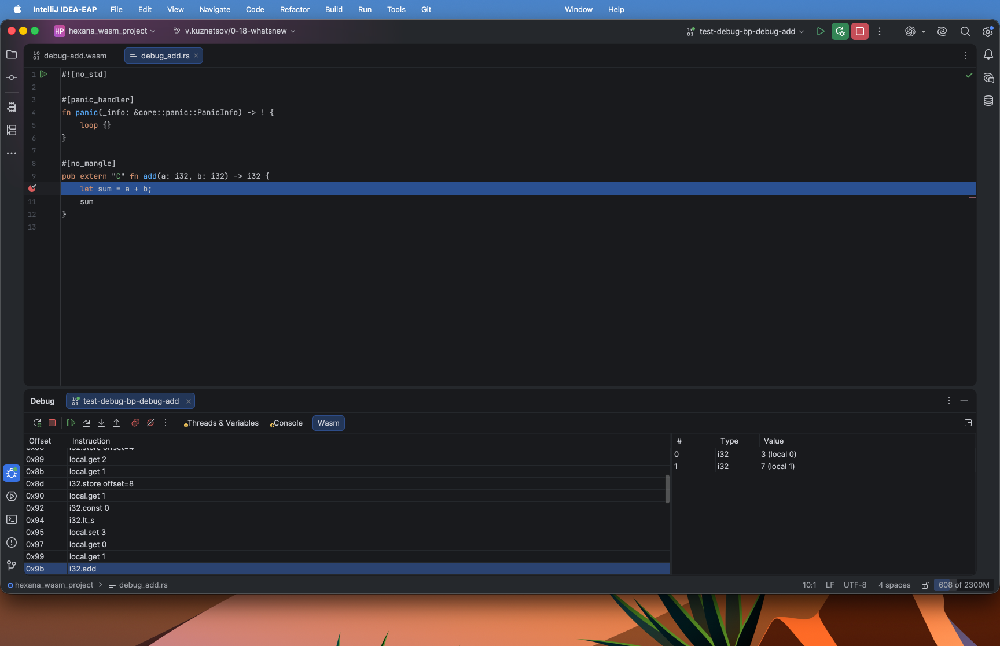
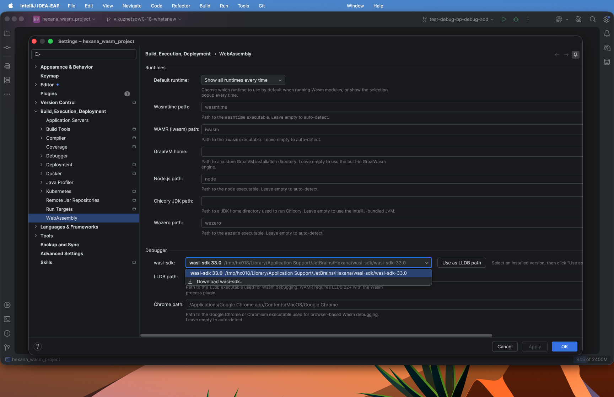
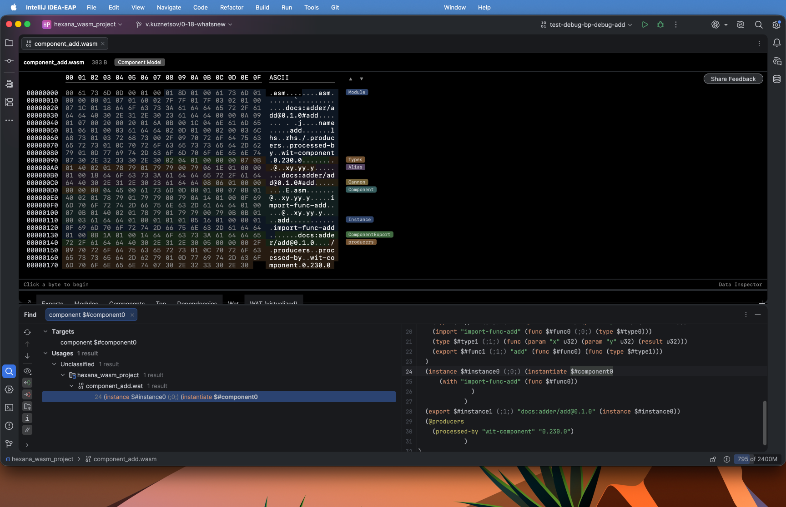

Hexana update
What's New in Hexana 0.18
Hexana 0.18 focuses on WASM debugger, Debugger setup, and Component Model while refining binary inspection inside JetBrains IDEs.
WASM debugger
Debug Wasmtime one WASM instruction at a time
Wasmtime 44+ sessions now use the guest gdbstub for exact instruction stepping, live operand values, guest frames, and concrete source variables.
- Per-instruction stepping in the Wasm debugger tab under wasmtime. While the tab is selected, Step Over and Step Into advance exactly one wasm instruction, including instructions the old native path could never stop on (
local.get,i32.const). - The Wasm tab's operand stack shows live values under wasmtime. Each slot is read from the runtime at every stop (wasmtime's gdbstub serves the operand stack over the debug protocol.
- Exact current-instruction highlight in the Wasm tab. Instructions without immediates (
i32.add,end,drop, ...) have no recorded offsets in the parser model; their rows now get offsets deduced from neighboring instructions. - Wasmtime debugging switched to wasmtime's built-in gdbstub guest debugger: the session starts
wasmtime run -g <port>and attaches LLDB over the gdb-remote protocol (process connect --plugin wasm). LLDB reads DWARF directly from the wasm module, so the JIT loader, the native-address-to-wasm-offset translation and the trap workarounds of the old native path are gone. - Evaluating an expression in a wasmtime debug session no longer kills the LLDB process. LLDB's expression compiler cannot generate code for wasm targets and aborts on any expression that parses (an upstream LLVM defect, present in wasi-sdk and stock LLVM builds.

Debugger setup
Install and select wasi-sdk from the IDE
Download managed wasi-sdk versions side by side, then explicitly use the selected SDK's LLDB for WebAssembly debugging.
- Managed wasi-sdk installation. Wasm debugging needs an LLDB built with the wasm process plugin, and the wasi-sdk distribution ships one.

Component Model
Navigate Component Model WAT with confidence
Component Model declarations now parse and resolve for navigation, Find Usages works in embedded WAT, and annotation sections render as metadata.
- Improved support for Component Model in WAT files: parsing, reference resolution, navigation.
- Find Usages for WAT declarations now works in the embedded WAT editor.
- Custom WAT annotation sections such as
(@producers (processed-by "wit-component" "0.227.1") (language "Rust" ""))no longer render as errors. Annotation contents are free-form by design, so an unrecognised word inside one is now annotation text rather than a bad character.

Also in 0.18
- Bring the Wasm debugger tab to WAMR WAMR sessions gain current-instruction highlighting, instruction stepping, and live values where the runtime exposes locals or globals.